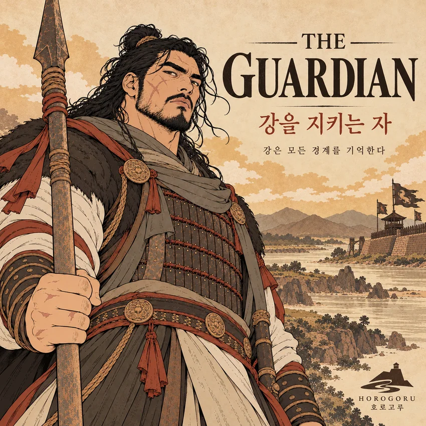

01
THE GUARDIAN강을 지키는 자
창을 쥐고 임진강을 감시하는 고구려 수호자.
이 장면의 이야기 읽기 ↗
호로고루 — 강은 모든 경계를 기억한다
임진강을 지키던 고구려의 성에서 오늘날의 접경 풍경까지. 호로고루의 자연·역사·생활문화를 일곱 장면의 문학 서사와 사실 기반 칼럼으로 읽습니다.
경기도 연천군 장남면 · 연천 호로고루(국가 사적)
호로고루 이야기 읽기두 편의 전문 원고와 에피소드의 흐름을 함께 읽어보세요.
강은 모든 경계를 기억한다. 경계는 시대마다 달라졌지만, 임진강은 그 자리를 흘러왔다.
호로고루는 임진강의 중요한 여울목을 살피기 위해 세운 고구려의 강안 방어시설입니다. 삼각형 대지와 가파른 절벽, 동쪽의 인공 성벽은 자연지형을 이용한 축성의 특징을 보여줍니다.
이 시리즈의 거대한 수호자는 고구려의 삶과 국경 방어를 상상하기 위해 만든 가상 인물입니다. 작품은 그가 돌을 옮기고, 음식을 먹고, 동료를 붙잡는 장면을 지나 오늘의 호로고루를 바라보는 아이에게로 이어집니다.
EP 01–06과 대표 커버의 장면 안내입니다. 각 장면을 선택하면 해당 문학 서사의 본문으로 이동합니다.
창을 쥐고 임진강을 감시하는 고구려 수호자.
이 장면의 이야기 읽기 ↗절벽과 여울, 삼각형 대지가 이룬 방어의 지형.
이 장면의 이야기 읽기 ↗흙을 다지고 돌을 옮겨 성벽을 쌓는 사람들.
이 장면의 이야기 읽기 ↗곡물과 토기, 식사 속에 남은 군사 거점의 일상.
이 장면의 이야기 읽기 ↗여울목에서 물살에 휩쓸린 동료를 붙잡는 손.
이 장면의 이야기 읽기 ↗오늘의 아이와 어른이 성벽에 관해 이야기를 나눈다.
이 장면의 이야기 읽기 ↗뒤돌아보는 수호자와 저녁빛의 임진강.
이 장면의 이야기 읽기 ↗현재 공개된 대표 커버 이미지는 상단에서 감상할 수 있으며, 각 장면의 개별 아트워크는 이 페이지에 아직 연결되지 않았습니다.
고구려의 한 수호자가 국경을 지키는 일에서 사람들의 하루를 지키는 일로 시선을 넓혀가는 이야기.
완성된 여섯 에피소드와 대표 커버를 바탕으로 쓴 연작 문학 산문 전문입니다. 사건과 대화는 역사적 소재에 기초한 허구입니다.
HOROGORU — THE HANDS THE RIVER REMEMBERS
호로고루 — 경계에서 살아간 사람들의 이야기
새벽의 강은 언제나 사람보다 먼저 깨어났다.
호로고루의 성벽 위로 바람이 올라왔다. 밤새 식어 있던 돌 사이를 지나온 바람은 차가웠고, 강가의 축축한 흙냄새를 품고 있었다.
사내는 창을 고쳐 쥐었다.
그의 손은 보통 사람의 손보다 훨씬 컸다. 굵은 손가락에는 오래된 상처가 있었고, 손바닥은 거친 나무와 돌을 만진 세월만큼 두꺼워져 있었다. 창을 쥐고 있는 것만으로도 그가 얼마나 힘센 사람인지 짐작할 수 있었다.
사람들은 그를 믿었다. 무거운 돌을 들 때도, 성벽을 고칠 때도, 낯선 움직임이 강 건너에서 발견될 때도 먼저 그를 찾았다.
하지만 사내가 가장 오래 하는 일은 힘을 쓰는 일이 아니었다.
바라보는 일이었다.
강 건너편의 나무 한 그루가 흔들리는 모습, 여울에 드러난 돌의 위치, 물살 사이로 나타났다 사라지는 작은 움직임까지 그는 오래도록 지켜보았다.
강을 건너는 사람이 누구인지, 무엇을 가지고 오는지, 다시 돌아갈 사람인지 알 수 없었다.
그래서 그는 늘 같은 자리에 서 있었다.
가끔 사내는 궁금했다.
저 강은 어디까지 흘러갈까.
자신이 한 번도 가보지 못한 땅에도 지금과 같은 바람이 불까. 그곳에도 아침마다 불을 피우고, 밥을 먹고, 누군가의 돌아오기를 기다리는 사람들이 있을까.
그는 그 생각을 오래 붙잡지 않았다.
다시 강을 바라보았다.
그가 해야 할 일은 분명했다.
이곳을 지키는 것.
다만 아직은, 그 말이 무엇을 뜻하는지 모두 알지 못했다.
호로고루의 성벽은 사람의 손으로 세워졌지만, 그곳의 첫 번째 성벽은 사람이 만든 것이 아니었다.
오래전 굳어버린 검은 돌을 강이 깎아 내렸다.
물은 단단한 땅을 피해 가지 않았다. 끊임없이 흐르고 부딪히며 조금씩 길을 만들었다. 그렇게 깎인 땅의 가장자리에는 가파른 절벽이 남았다.
그 위에 사람들이 올라왔다.
강을 건너기 쉬운 곳이 어디인지 살피고, 높은 곳에서 얼마나 멀리 내다볼 수 있는지 헤아렸다. 강과 절벽을 따라 뻗은 땅 위에 성을 세우기로 했다.
두 방향은 자연의 비탈과 절벽이 막아주었다. 육지에서 접근할 수 있는 쪽에는 흙과 돌을 쌓았다.
사람들은 자연이 만들어 놓은 자리에 자신들의 성벽을 덧붙였다.
사내는 높은 곳에 서서 그 모습을 내려다보곤 했다.
멀리서 보면 성은 거대해 보였다. 하지만 조금 더 멀리 시선을 보내면 그 아래에는 훨씬 오래전부터 흐르고 있던 강이 있었다.
사람들이 쌓은 돌은 셀 수 있었다.
강이 흘러온 시간은 셀 수 없었다.
사내는 발밑의 돌을 한 번 내려다보았다.
돌에는 사람의 이름이 적혀 있지 않았다. 그럼에도 그 돌은 오래전부터 이곳에 있었다.
바람이 불었다.
절벽 아래로 물소리가 번졌다.
그는 문득 이곳을 지키는 자신도 언젠가는 떠나겠지만, 이 강은 계속 흐를 것 같다고 생각했다.
"조금만 더!"
누군가의 외침에 사람들이 동시에 힘을 주었다.
사내가 두 팔로 끌어안고 있던 커다란 돌이 천천히 움직였다. 돌의 거친 면이 그의 팔뚝을 눌렀다. 발밑의 흙이 미끄러졌지만 그는 무릎을 굽혀 무게를 버텼다.
곁에서는 누군가 흙을 다지고 있었다. 다른 이는 나무를 세우고, 또 다른 이는 돌이 놓일 자리를 고르고 있었다.
마른 흙이 날아올랐다.
나무가 부딪히는 소리, 돌을 내려놓는 소리, 짧은 숨을 몰아쉬는 소리가 강바람 사이로 흩어졌다.
사내는 마침내 돌을 내려놓았다.
쿵.
묵직한 소리와 함께 사람들의 어깨가 조금씩 내려갔다.
그는 손등으로 이마를 훔쳤다. 하루 종일 돌을 옮기는 일쯤은 어렵지 않다고 생각했지만, 제아무리 힘이 세도 성벽을 혼자 완성할 수는 없었다.
큰 돌 하나를 옮기는 동안 누군가는 길을 고르고, 누군가는 손이 다치지 않도록 받침을 끼웠다. 돌을 내려놓고 나면 또 다른 사람이 그 사이를 채웠다.
그렇게 하나의 돌이 다른 돌에 기대어 자리를 잡았다.
해가 기울 무렵, 사내는 조금 전까지 사람들이 일하던 곳을 돌아보았다.
아침에는 없었던 성벽의 일부가 그 자리에 서 있었다.
누가 먼저 시작했는지, 누가 가장 힘을 많이 썼는지는 그 모습을 보고 알 수 없었다.
다만 한 가지는 분명했다.
저 돌들 사이에는 오늘 이곳에 있던 사람들의 시간이 들어 있었다.
사내는 다시 바닥에 놓인 돌 하나를 집어 들었다.
조금 전보다 가벼운 돌이었다.
그런데 어쩐지 그 돌을 놓는 손길은 조금 더 조심스러워졌다.
성벽 안에서도 밥 짓는 냄새가 났다.
누군가는 항아리에서 곡물을 덜어 내고, 누군가는 바구니에 담긴 낟알을 골랐다. 물을 담아 온 그릇이 바닥에 놓이고, 한쪽에서는 따뜻한 음식이 사람들의 손으로 건네졌다.
사내는 낮은 자리에 앉아 작은 그릇 하나를 받아 들었다.
커다란 손으로 감싸 쥔 그릇은 유난히 작아 보였다.
그는 천천히 한 숟갈을 입에 넣었다.
뜨거웠다.
잠깐 숨을 고르며 고개를 들자 사람들이 보였다.
누군가는 그릇을 나르고 있었고, 누군가는 곡물을 정리하고 있었다. 성벽 위에서는 여전히 경계하는 병사들의 모습이 어른거렸다.
사내는 이곳의 소리들을 알고 있었다.
새벽에 누군가 물을 긷는 소리.
돌바닥 위로 그릇을 내려놓는 소리.
하루 일을 마친 사람들이 짧게 웃는 소리.
멀리 강 건너에서 무엇인가 움직이면 그 모든 소리가 잠시 멎곤 했다.
그러나 지금은 아니었다.
지금 사람들은 음식을 먹고 있었다.
사내는 손에 든 그릇을 바라보았다.
누가 이 곡물을 거두었을까. 누가 먼 곳에서 이곳까지 옮겨왔을까. 누가 물을 길었고, 누가 불 앞에 앉아 음식을 준비했을까.
그는 그 사람들의 이름을 모두 알지 못했다.
하지만 그들의 수고를 알고 있었다.
문득 그가 오랫동안 지켜온 성벽이 조금 다르게 느껴졌다.
성벽은 돌로 되어 있었다.
그 안에는 사람들이 있었다.
그들은 아침이 오면 일어나고, 해가 지면 피곤해하고, 배가 고프면 밥을 먹었다.
사내도 그들 가운데 하나였다.
그는 다시 한 숟갈을 떠먹었다.
조금 전보다 천천히 씹었다.
이렇게 아무 일 없는 날이 계속되기를 바랐다.
그에게는 그 소망이 무엇보다 간절했다.
강물은 멀리서 바라볼 때보다 훨씬 차가웠다.
발을 디딜 만한 돌이 보였다가 물살 아래로 사라졌다. 사람들은 창자루를 지팡이처럼 짚으며 조심스럽게 여울을 건너고 있었다.
누군가 발을 헛디뎠다.
물소리 사이로 짧은 외침이 들렸다.
사내가 고개를 돌렸다.
젊은 병사 하나가 강가의 바위에 매달려 있었다. 물살에 밀린 몸이 자꾸만 아래쪽으로 미끄러졌다. 젖은 옷은 무거워졌고, 손끝은 바위에서 버틸 자리를 찾지 못했다.
사내는 창을 내려놓았다.
그리고 곧장 몸을 낮췄다.
한쪽 무릎을 돌 위에 세우고 다른 다리를 물속에 디뎠다. 젖은 바위가 미끄러웠다. 그는 손바닥으로 바위를 짚어 몸을 고정하고 다른 팔을 뻗었다.
"잡아!"
젊은 병사가 손을 뻗었다.
두 사람의 손끝이 잠깐 스쳤다.
물살이 다시 몸을 밀었다.
사내는 조금 더 몸을 숙였다. 어깨를 돌려 팔을 뻗자 마침내 젊은 병사의 손목이 손안에 들어왔다.
그는 힘껏 움켜쥐었다.
팔에 무게가 실렸다.
젊은 병사의 몸이 물살을 따라 흔들렸다. 젖은 옷에서 물이 흘러내렸고, 바위에 눌린 사내의 무릎이 아려왔다.
그런 것은 중요하지 않았다.
지금 그의 손에는 한 사람의 몸이 매달려 있었다.
그는 숨을 깊이 들이마시고 팔을 당겼다.
젊은 병사의 어깨가 수면 위로 올라왔다.
조금 더.
마침내 몸이 바위를 넘어왔다.
두 사람은 한동안 아무 말도 하지 못했다.
젊은 병사는 돌 위에 엎드려 거친 숨을 몰아쉬었다. 사내는 옆에 앉아 강을 바라보았다.
물은 아무 일도 없었다는 듯 흘러가고 있었다.
강 건너에서는 다른 병사들이 여전히 조심스럽게 발을 옮기고 있었다.
사내는 자신의 손을 내려다보았다.
조금 전까지 그 손은 창을 쥐고 있었다.
성을 지키고, 강을 감시하고, 낯선 사람을 막기 위한 손이었다.
그러나 방금 그 손은 누군가를 놓치지 않으려 애쓰고 있었다.
젊은 병사가 몸을 일으켰다.
"살았습니다."
사내는 대답하지 않았다.
그저 병사의 젖은 어깨를 한 번 두드렸다.
강은 계속 흘렀다.
그날 사내가 건져 올린 것은 한 사람의 몸이었지만, 그의 마음속에는 그보다 무거운 무엇인가가 남았다.
강을 지킨다는 것이 어떤 일인지, 그는 이제 조금 알 것 같았다.
아주 오랜 시간이 흘렀다.
성벽 위에서 강을 지키던 사람들은 사라졌다.
그들이 입었던 옷도, 들고 다니던 창도, 매일 아침 서로를 부르던 목소리도 더는 들리지 않았다.
그러나 성벽의 일부는 남아 있었다.
호로고루에는 다시 사람들이 찾아왔다.
이번에는 창을 든 병사들이 아니었다.
아이 하나가 길을 걷다 걸음을 멈췄다.
"저기는 뭐예요?"
아이가 높은 곳에 남아 있는 성벽을 가리켰다.
곁에 있던 나이 든 여자가 아이의 어깨에 손을 얹었다. 두 사람의 앞에는 오래된 성벽과 풀밭이 펼쳐져 있었고, 그 너머로 강이 흐르고 있었다.
"아주 오래전에 사람들이 세운 성이란다."
아이는 한참 동안 성벽을 올려다보았다.
"왜 만들었어요?"
여자는 잠시 생각했다.
"강을 건너는 사람들을 살피고, 이곳을 지키려고 했겠지."
아이는 다시 성을 바라보았다.
커다란 돌들이었다.
누가 저 돌들을 가져왔을까. 얼마나 많은 사람이 여기에 있었을까.
아이는 그곳에 살던 사람들을 떠올려 보려 했다.
하지만 얼굴은 쉽게 그려지지 않았다.
"저기에도 사람들이 살았어요?"
"그럼. 밥을 먹고, 일을 하고, 쉬기도 했겠지."
여자는 아이가 바라보는 쪽으로 시선을 옮겼다.
성벽 아래에서는 바람이 풀잎을 흔들고 있었다. 곁에 핀 해바라기 몇 송이가 같은 방향으로 고개를 기울였다.
지금 이곳에서 들리는 것은 강과 바람, 그리고 사람들의 작은 목소리뿐이었다.
옛사람들이 무엇을 두려워했는지, 누구를 기다렸는지, 하루를 마치고 어떤 이야기를 나누었는지는 모두 알 수 없었다.
그렇지만 그들이 이곳에서 하루하루를 살아갔다는 사실은 남아 있었다.
아이는 여자의 손을 잡았다.
그리고 조금 더 가까이 성벽을 바라보았다.
그곳에는 더 이상 오래전의 병사가 서 있지 않았다.
강을 막아야 할 적도, 건너야 할 군대도 보이지 않았다.
대신 한 아이가 있었다.
오래된 성벽을 가리키며, 자신보다 훨씬 먼저 이곳에 살았던 사람들을 궁금해하는 아이.
강은 아이의 목소리를 들었을까.
알 수 없었다.
다만 강은 오늘도 그 자리를 지나 흐르고 있었다.
해가 기울고 있었다.
사내는 강을 향해 천천히 걸었다.
걸음을 옮길 때마다 발밑의 작은 돌들이 부딪혔다. 등 뒤에서 불어온 바람이 머리카락을 흩뜨렸다.
그의 손에는 여전히 창이 들려 있었다.
그러나 창끝은 하늘이 아닌 땅을 향하고 있었다.
사내는 잠시 걸음을 늦추었다.
멀리 강이 보였다.
그가 오랫동안 바라보았던 강이었다.
이곳에 처음 섰을 때 그는 자신이 아주 강한 사람이라고 생각했다.
커다란 돌을 들 수 있었고, 무거운 창을 오래 쥘 수 있었다. 다른 사람들이 두려워하는 곳에도 홀로 서 있을 수 있었다.
하지만 성을 쌓으며 알게 되었다.
자신보다 작은 사람들이 모여 자신 혼자서는 만들 수 없는 것을 완성한다는 사실을.
밥을 먹으며 알게 되었다.
아무 일 없는 하루가 얼마나 많은 사람의 손을 거쳐 이루어지는지를.
강을 건너며 알게 되었다.
한 사람을 붙잡는 데에도 자신이 가진 모든 힘이 필요할 때가 있다는 것을.
사내는 어깨너머로 잠시 뒤를 돌아보았다.
돌로 쌓은 성벽이 보였다.
그 안에서 하루를 보내고 있을 사람들이 떠올랐다.
먼 훗날 누군가는 그가 서 있던 자리를 지나갈 것이다.
그 사람은 이곳에 누가 살았는지 모를지도 모른다.
돌을 들었던 손도, 그릇을 쥐었던 손도, 강물 속에서 누군가를 붙잡았던 손도 기억하지 못할 것이다.
사내는 다시 강을 향해 걸었다.
그가 남길 수 있는 것은 많지 않았다.
그저 오늘 자신이 지킨 것들이 내일도 무사하기를 바랐다.
강물이 저녁빛을 받아 천천히 반짝였다.
언젠가 성벽의 주인이 바뀌고, 이 땅을 부르는 이름이 달라져도, 강은 계속 흐를 것이다.
그리고 아주 먼 훗날.
어떤 아이가 이곳을 찾아와 오래된 돌을 가리키며 물을지도 모른다.
여기에는 누가 살았어요?
그때 누군가 이렇게 이야기해 준다면 좋겠다고, 사내는 생각했다.
이곳에도 우리와 같은 사람들이 살았단다.
사내의 걸음이 조금씩 멀어졌다.
강은 오래도록 그 자리에 남았다.
그가 누구였는지 묻지 않은 채.
그가 무엇을 지키려 했는지 모두 알지 못한 채.
다만 그가 살아낸 시간과, 그곳에서 서로를 붙잡았던 사람들의 흔적을 품은 채.
강은 모든 경계를 기억한다.
자연의 절벽에서 고구려의 축성기술과 생활유물, 고랑포구, 해바라기밭으로 이어지는 실제 지역 이야기.
공개된 역사·고고학 자료를 바탕으로 임진강 강안 방어체계와 오늘날 연천의 문화자산을 이해하기 쉽게 풀어쓴 사실 기반 칼럼 전문입니다.
HOROGORU — CULTURAL EDITORIAL
고구려의 국경에서 오늘의 연천까지
경기도 연천군 장남면, 임진강이 흐르는 길목에 조금 특별한 성이 남아 있다. 이름은 호로고루(瓠蘆古壘). 삼국시대 고구려가 강을 지키기 위해 세운 성곽으로, 2006년 국가 사적으로 지정되었다.
오늘날 호로고루를 찾으면 거대한 궁궐이나 화려한 성문 대신 풀로 덮인 성벽과 넓은 하늘을 마주하게 된다. 언뜻 보면 평범한 언덕처럼 느껴질지도 모른다.
하지만 이곳의 지형과 땅속에서 발견된 유물을 살펴보면, 호로고루가 고구려의 역사에서 얼마나 중요한 장소였는지 알 수 있다.
호로고루의 가장 큰 특징은 사람이 성벽을 쌓기 전부터 자연이 이미 훌륭한 방어시설을 만들어 놓았다는 점이다.
먼 옛날, 지금의 한탄강과 임진강 일부 지역에는 화산활동으로 흘러나온 용암이 굳어 현무암 대지가 만들어졌다. 이후 오랜 시간 강물이 땅을 깎아 내리면서 가파른 절벽이 형성되었다.
고구려 사람들은 이 지형을 활용했다.
호로고루는 임진강과 지류가 만나는 곳에 형성된 삼각형 대지 위에 있다. 두 방향은 자연 절벽이 방어를 도왔고, 상대적으로 접근하기 쉬운 동쪽에는 인공 성벽을 세웠다.
전체 성곽의 둘레는 약 401m, 현재 남아 있는 동벽의 길이는 약 93m이다.
이처럼 강변의 평탄한 대지에 자연 절벽과 인공 성벽을 결합한 성을 '강안평지성(江岸平地城)'이라고 부른다.
자연의 지형을 이해하고 필요한 곳에만 방어시설을 구축한 고구려의 군사적 판단을 엿볼 수 있는 구조다.
호로고루를 이해하는 또 하나의 열쇠는 강을 건널 수 있는 여울목에 있다.
임진강은 가파른 절벽 때문에 군대가 쉽게 건너기 어려운 자연 장애물이었다. 하지만 강물의 깊이가 상대적으로 얕아지는 여울에서는 도하가 가능했다.
호로고루가 자리한 고랑포 일대는 임진강 하류에서 올라왔을 때 배 없이 강을 건널 수 있는 주요 길목이었다.
오늘날 도로와 다리가 교통의 중심이라면, 당시에는 이러한 여울목이 사람과 군대의 이동을 좌우하는 중요한 통로였다.
특히 고구려가 한강 유역을 상실한 6세기 중엽 이후, 임진강 일대는 고구려와 신라가 대립하는 중요한 군사적 경계가 되었다.
『삼국사기』에는 이 부근의 임진강을 '호로하(瓠蘆河)'라고 부른 기록이 남아 있다. 662년 김유신의 군대가 강을 건너는 과정과 관련된 기록에서도 이 일대의 전략적 중요성을 확인할 수 있다.
호로고루는 단순히 높은 곳에 세운 감시시설이 아니었다. 강을 건너는 길목을 살피고, 군사적 이동을 통제하기 위한 중요한 거점이었다.
호로고루에는 고구려 사람들이 성을 쌓았던 방법도 남아 있다.
발굴조사에서는 본격적인 석축 성벽보다 앞서 설치된 목책의 흔적이 확인되었다. 처음부터 지금과 같은 규모의 성벽이 존재했던 것은 아니라는 뜻이다.
이후 고구려 사람들은 흙을 층층이 다져 단단하게 만드는 '판축' 기술과 돌을 쌓는 '석축' 기술을 함께 활용했다.
흙은 성벽의 형태를 만들고, 돌은 구조를 견고하게 보강했다. 내부에는 목재를 이용한 시설의 흔적도 발견되었다.
이렇게 서로 다른 재료와 기술을 결합한 성벽은 고구려의 토목기술을 이해하는 중요한 자료가 된다.
호로고루와 비슷한 구조는 같은 연천 지역의 당포성에서도 확인된다. 한탄강과 차탄천이 만나는 곳의 은대리성 역시 삼각형 지형을 활용한 고구려 성곽이다.
세 유적은 고구려가 임진강·한탄강 유역의 지형과 주요 교통로를 어떻게 활용했는지를 함께 보여준다.
호로고루의 발굴조사에서 흥미로운 것은 무기나 성벽의 흔적만 발견된 것이 아니라는 사실이다.
성 내부에서는 건물터와 우물, 온돌, 물을 모아 두던 시설 등이 확인되었다. 많은 양의 기와와 토기, 연꽃무늬가 새겨진 연화문 와당, 지붕의 장식에 사용하던 치미 조각도 발견되었다.
특히 수준 높은 기와 건축과 관련된 유물들은 호로고루가 단순한 작은 초소 이상의 중요성을 지닌 시설이었을 가능성을 보여준다.
먹거리와 관련된 유물도 있다.
발굴 과정에서 불에 타 검게 변한 쌀·조·콩·팥 등의 곡물이 발견되었다. 소와 말, 사슴, 노루, 멧돼지, 개 등 여러 동물의 뼈도 출토되었다.
이 유물들은 당시 사람들이 어떤 식량과 동물자원을 이용했는지 연구하는 단서다. 다만 동물뼈의 일부는 의례와 연관되었을 가능성도 제기되어, 발견된 모든 동물이 평소 음식으로 소비되었다고 단정할 수는 없다.
우리는 그들이 정확히 어떤 음식을 만들었고, 하루에 몇 번 식사했는지 모두 알지 못한다.
그렇지만 한 가지는 알 수 있다.
호로고루는 전쟁을 대비한 장소인 동시에 사람들이 물을 사용하고, 음식을 마련하고, 일상을 이어가던 공간이었다는 사실이다.
거대한 성벽의 역사는 결국 그 안에서 살아간 사람들의 역사이기도 하다.
임진강의 역사에서 흥미로운 점은 강이 언제나 사람들을 갈라놓는 경계였던 것은 아니라는 사실이다.
시대가 바뀌면서 같은 강은 사람과 물자가 오가는 교통로이자 교역의 공간이 되었다.
호로고루 인근의 고랑포구는 그 변화를 보여주는 대표적인 장소다.
고랑포구는 임진강을 통해 내륙과 서해안의 교통을 연결하던 중요한 포구였다. 조선시대에도 주요 교통로였으며, 근대에는 상업활동이 활발하게 이루어졌다.
1930년대에는 화신백화점의 분점이 들어설 만큼 번성한 시기도 있었다.
그러나 한국전쟁과 분단을 거치면서 포구의 기능은 쇠퇴했다.
현재 고랑포구 역사공원에서는 옛 포구의 상업과 생활, 한국전쟁과 접경지역의 역사를 전시를 통해 살펴볼 수 있다.
한때 군대의 이동을 통제하던 강이 교역의 통로가 되고, 다시 전쟁과 분단의 영향을 받았다는 사실은 이 지역이 겪어 온 시간의 변화를 보여준다.
오늘날 호로고루는 또 다른 모습으로 사람들을 맞이한다.
오래된 성벽 주변으로 넓은 들판이 펼쳐지고, 계절에 따라 다양한 풍경을 보여준다. 특히 해바라기밭은 호로고루를 알리는 대표적인 현대의 경관이 되었다.
이 해바라기밭은 고구려 시대부터 존재했던 전통이 아니다.
2014년 장남면 주민자치위원회의 마을 만들기 사업을 계기로 주민들이 가꾸기 시작한 지역문화 자산이다.
이를 바탕으로 발전한 '연천 장남 통일바라기 축제'는 평화통일에 대한 염원과 지역 공동체의 참여를 담아 왔다.
2026년에는 9월 3일부터 6일까지 제11회 축제가 개최되었으며, 해바라기와 꽃 정원뿐 아니라 지역 농가의 직거래 장터와 체험 프로그램도 마련되었다.
이러한 활동에서 주목할 점은 오래된 유적의 가치를 오늘날 주민들이 새로운 방식으로 이어가고 있다는 사실이다.
과거에는 강을 감시하던 병사들이 머물렀던 공간에, 오늘날에는 꽃을 가꾸는 주민들과 역사를 배우러 찾아온 사람들이 함께한다.
물론 고구려 시대의 국경과 오늘날 남북의 군사적 경계는 서로 다른 역사적 배경에서 만들어졌다.
그럼에도 같은 강과 땅을 바라보며 사람들이 경계와 평화의 의미를 생각할 수 있다는 점에서, 호로고루는 오늘날에도 의미 있는 장소다.
호로고루의 역사는 하나의 성벽만으로 설명되지 않는다.
수십만 년에 걸쳐 형성된 현무암 지형, 강을 건너는 길목을 지키던 고구려의 군사시설, 성 안에서 사용했던 생활용품, 근현대 고랑포구의 교역과 전쟁의 기억, 그리고 오늘날 주민들이 가꾸는 문화가 서로 연결되어 있다.
우리가 호로고루를 찾아야 하는 이유도 여기에 있다.
성벽에 올라 강을 바라보는 일은 단순히 오래된 유적을 구경하는 것과 조금 다르다.
왜 사람들이 이곳에 성을 세웠는지, 이 강을 통해 어떤 사람들이 오갔는지, 성 안에서는 어떤 일상이 이어졌는지 질문해 볼 수 있기 때문이다.
호로고루는 고구려의 군사적 역사를 보여주는 유적인 동시에, 자연을 활용한 인간의 지혜와 시대에 따라 달라진 지역의 생활문화를 읽을 수 있는 장소다.
강은 오래전부터 그곳을 흘렀다. 달라진 것은 강을 바라보는 사람들과 그들이 강에 부여한 의미였다.
그리고 오늘날의 호로고루는 그 오랜 이야기를 다시 발견할 수 있는 공간으로 남아 있다.
물살, 돌을 내려놓는 소리, 성벽을 스치는 바람을 모티브로 한 사운드 콘셉트. 정식 음원은 아직 연결되지 않았습니다.
제작·공개되지 않은 음원을 재생 가능하다고 표시하지 않습니다.
접경지역 일부 구역은 출입 또는 촬영이 제한될 수 있습니다. 유적 보호와 현지 안내에 유의하고, 축제 및 전시관 운영시간은 방문 전 공식 채널에서 확인하세요.